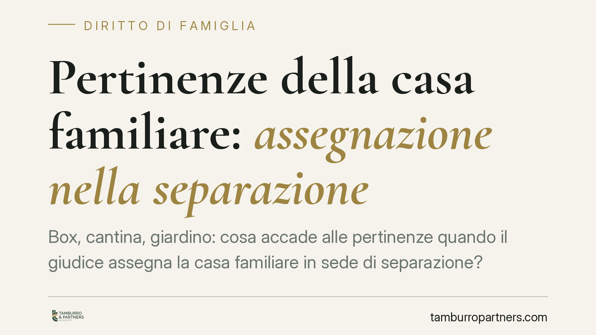

Pertinenze della casa familiare: assegnazione nella separazione
Box, cantina, giardino: cosa accade alle pertinenze quando il giudice assegna la casa familiare in sede di separazione? La Corte di Cassazione conferma che anche questi beni seguono il criterio dell'interesse dei figli previsto dall'art. 337-sexies c.c., non valutazioni di altra natura. Una precisazione che incide in modo concreto su spese, godimento e rapporti tra ex coniugi.

Pertinenze della casa familiare nella separazione: il criterio applicabile
Il tema delle pertinenze della casa familiare nella separazione torna all'attenzione della giurisprudenza di legittimità. La questione è semplice solo in apparenza: quando il giudice assegna l'abitazione familiare a uno dei coniugi, cosa accade al box auto, alla cantina, al posto macchina o al giardino?
La Corte di Cassazione ha ribadito che l'assegnazione di questi beni segue lo stesso criterio che regola l'assegnazione dell'immobile principale, ossia l'interesse dei figli di cui all'art. 337-sexies cod. civ. Non rilevano, dunque, esigenze personali o economiche del coniuge, né equilibri patrimoniali estranei alla funzione abitativa del nucleo familiare.
Inquadramento normativo
Il punto di partenza è l'art. 817 cod. civ., che definisce pertinenza la cosa destinata in modo durevole al servizio o all'ornamento di un'altra cosa (il bene principale). Nel nostro caso, il bene principale è la casa familiare, e le pertinenze sono gli accessori funzionalmente collegati all'abitazione: box, cantine, soffitte, posti auto, giardini.
L'art. 337-sexies cod. civ. stabilisce che il godimento della casa familiare è attribuito tenendo prioritariamente conto dell'interesse dei figli. La giurisprudenza di legittimità ha chiarito che questa assegnazione non ha natura di tutela economica del coniuge, ma risponde all'esigenza di conservare ai figli l'*habitat domestico*, cioè l'ambiente di vita in cui sono cresciuti. L'orientamento consolidato della Corte estende tale ratio anche agli spazi accessori che completano la funzionalità abitativa dell'immobile.
È bene distinguere due piani che spesso si confondono: l'assegnazione attribuisce un diritto di godimento, non trasferisce la proprietà. Il coniuge assegnatario può usare la casa e le sue pertinenze, ma la titolarità del bene resta immutata.
Il nesso funzionale e i casi dubbi
Il principio generale è lineare: la pertinenza segue la casa quando serve a soddisfare un bisogno abitativo del nucleo. Le difficoltà emergono nei casi di confine.
Box o posto auto non contiguo. Un garage situato in un altro edificio o a distanza significativa non perde automaticamente la natura pertinenziale, ma il nesso funzionale va verificato in concreto. Se l'uso del box è slegato dalle esigenze quotidiane dei figli, l'assegnazione diventa discutibile.
Pertinenza con autonoma utilità economica. Un locale cantina trasformato in deposito commerciale, o un box locato a terzi con reddito proprio, può presentare un'autonomia tale da sottrarsi al vincolo abitativo. In questi casi prevale la valutazione sulla destinazione effettiva del bene.
Giardino di proprietà esclusiva e spazi condominiali. Il giardino annesso alla villetta e destinato all'uso familiare segue di norma la casa. Diverso è il caso del giardino condominiale, su cui il coniuge assegnatario vanta un diritto solo nei limiti del regolamento di condominio, non per effetto del provvedimento di assegnazione.
Implicazioni pratiche: spese e profili tributari
Chi ottiene il godimento della casa e delle pertinenze deve gestirne i costi. La ripartizione tipica distingue:
- Spese ordinarie (manutenzione corrente, pulizia, utenze): a carico del coniuge assegnatario, che usa il bene.
- Spese straordinarie (interventi sulle strutture, rifacimenti, adeguamenti): a carico del proprietario, salvo diverso accordo o provvedimento.
Sul piano fiscale, l'assegnatario non proprietario non è soggetto passivo IMU sulla casa adibita ad abitazione principale, poiché il diritto di abitazione rileva ai fini del tributo. Le pertinenze beneficiano della medesima disciplina entro i limiti di legge (di norma una unità per categoria catastale C/2, C/6 e C/7). È opportuno verificare la situazione catastale di ciascun bene, perché un box accatastato autonomamente può ricevere un trattamento diverso.
Cosa fare in concreto
- Verificate l'accatastamento di ogni bene accessorio: la natura pertinenziale ai fini civilistici non coincide sempre con quella catastale o fiscale.
- Documentate il nesso funzionale tra pertinenza e uso familiare, soprattutto per box distanti o locali con potenziale reddituale: sarà decisivo in caso di contestazione.
- Formalizzate negli accordi (verbale di separazione o accordo omologato) l'elenco preciso delle pertinenze assegnate, evitando formule generiche come "con relativi accessori".
- Definite per iscritto la ripartizione delle spese ordinarie e straordinarie, per prevenire conflitti successivi.
- Rivolgetevi a un professionista per i beni con autonoma utilità economica: la loro sorte non è scontata e merita una valutazione dedicata.
---
*Contributo informativo a cura di Tamburro & Partners - Avv. Giuseppe Tamburro. Non costituisce parere legale.*
Ogni famiglia ha il suo equilibrio.
Separazione, divorzio, affidamento, assegno: se vuoi un confronto riservato su una specifica situazione, scrivi allo studio. Ti rispondiamo entro un giorno lavorativo.